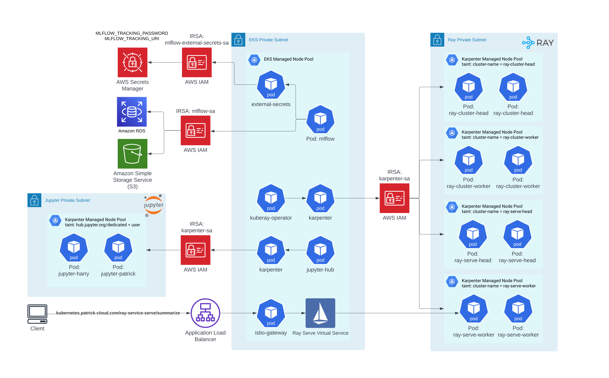
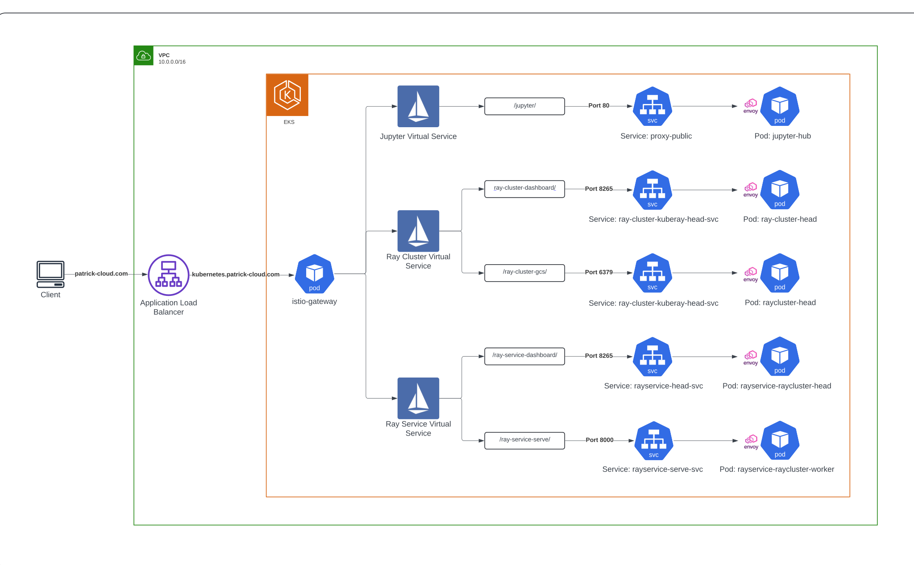
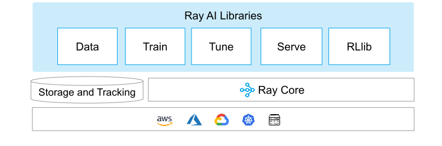
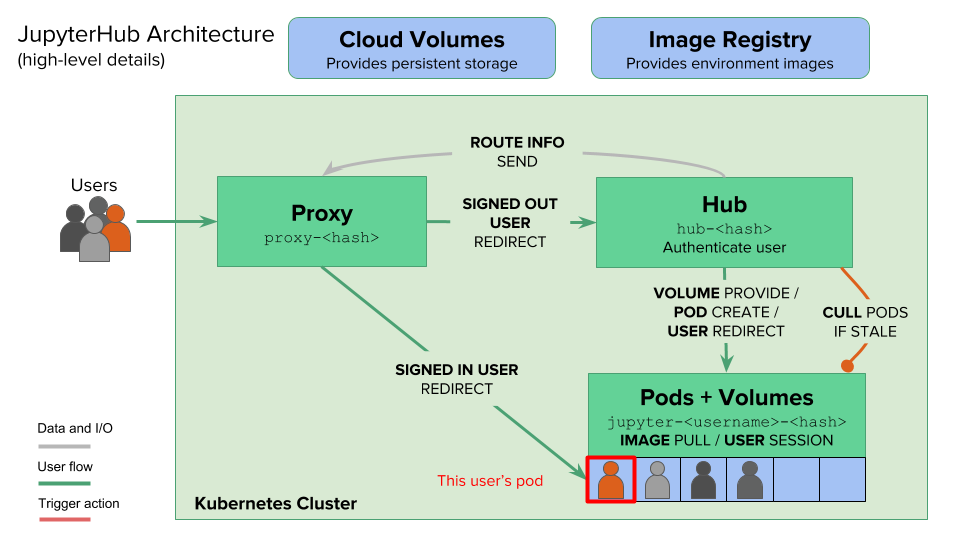
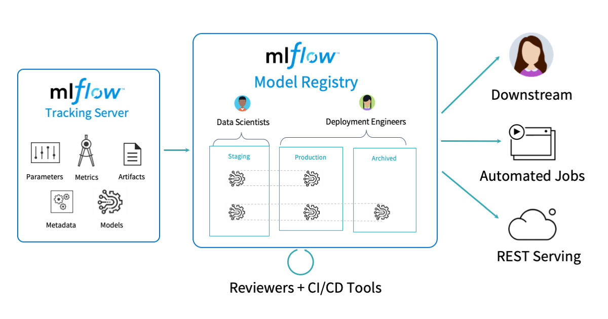

ML Platform
Architecture

Architecture Decisions
- Scaling - Karpenter automatically scales up or down depending on the utilization of each node resulting in lower compute costs.
- Node Optimization - Taints/Tolerations and Node Selectors were used to make sure Ray and Jupyter pods went to the compute heavy/GPU nodes.
- IP Allocation - Ray and Jupyter Hub were split into seperate subnets so if they were to scale past the allocated IPs given, the whole cluster wouldn't be clogged up.
- Service Accounts - A Karpenter service account was created to spin up EC2 nodes and a Mlflow service account was created to interact to the Mlflow database and S3 artifact store.

Consoles
- Ray Cluster Dashboard - Web-based dashboard for monitoring and debugging Ray applications
- Ray Serve Dashboad - Web-based dashboard for monitoring and debugging Ray applications
- Ray Serve Endpoint - API Endpoint for Ray Serve to turn input data into predictions
- Jupyter notebook - web-based notebook to write code in multiple languages
Services I used
Ray
-

Ray is an open-source unified framework for scaling AI and Python applications like machine learning.
- Model Serving - Ray offers a a simple Python API that lets users compose complex inference pipelines and deploy them in real time using YAML
- Computation - Ray is superior at machine learning workloads than Spark.
- Libraries - Ray has Scalable libraries for common machine learning tasks such as data preprocessing, distributed training, hyperparameter tuning, reinforcement learning, and model serving.
- More info on Ray here
Jupyter Hub
-

Jupyter Hub gives users access to computational environments and resources without burdening the users with installation and maintenance tasks. Users can get their work done in their own workspaces on shared resources which can be managed efficiently by system administrators.
- Collaboration - Jupyter Hub allows for users to collaborate on the same notebook.
- Customization - There is an option to design the image deployed for the notebook whether it is for a data engineer(spark) or data scientist (ray).
Mlflow
-

MLflow , at its core, provides a suite of tools aimed at simplifying the ML workflow. It is tailored to assist ML practitioners throughout the various stages of ML development and deployment.
- Experiment Management - Mlflow makes it easy to keep track of all the experiments.
- Model Management - Storing the model in a registry allows for reproudciblity when deploying the model.